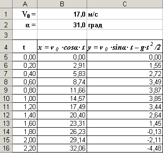
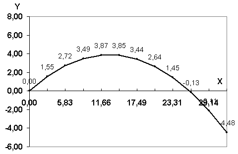
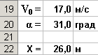
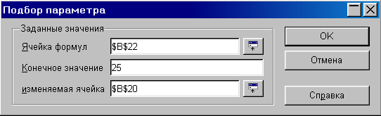
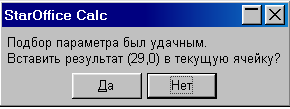

Компьютерная
модель «Попадание
в площадку тела,
брошенного
под углом к
горизонту»в электронных
таблицах.
На
основе формальной модели
«Попадание в площадку тела, брошенного
под углом к горизонту»,
построить и исследовать компьютерную
модель в электронных таблицах Microsoft
Excel
или
StarOffice
Calc
(OpenOffice
Calc).
Выделим в таблице
определенные ячейки для ввода значений
начальной скорости v0
и угла α
и вычислим по формулам 3.1 значения
координат тела x и y
для определенных значений времени t
с заданным интервалом.
Для
преобразования значений углов из градусов
в радианы используем функцию РАДИАНЫ().
|
|
Проект «Движение тела, брошенного под углом к горизонту» |
|
1 |
Запустить электронные таблицы StarOffice Calc. Для ввода начальной скорости
будем использовать ячейку B1,
а для ввода угла – ячейку B2.
|
 |
|
2 |
Введем в ячейки A5:A16
значения времени с интервалом в 0,2 с. |
|
|
3 |
В ячейки B5
и C5
введем формулы: =$B$1*COS(РАДИАНЫ($B$2))*A5 =$B$1*SIN(РАДИАНЫ($B$2))*A5-4,9*A5*A5 |
|
|
4 |
Скопируем формулы в ячейки В6:В16
и С6:С16 соответственно. |
Визуализируем модель, построив график зависимости
координаты y
от координаты x (траекторию движения
тела).
|
5 |
Построить диаграмму типа График, в которой используется в
качестве категории диапазон ячеек B5:B16,
а в качестве значений
- диапазон ячеек С5:С16. |
 |
Исследуем модель и определим с
заданной точностью 0,1 градуса значения
диапазона изменений угла, которые
обеспечивают попадание в площадку,
находящуюся на расстоянии 25 м и длиной 2 м,
при заданной начальной скорости 17 м/с.
Воспользуемся для этого методом Подбор параметра.
|
6 |
Установить для ячеек точность
один знак после запятой. |
|||
|
7 |
Ввести в ячейки B19 и B20
значения начальной
скорости V0
= 17 м/c и
угла α = 31 град, а в ячейку B22
формулу для вычисления координаты X
мячика для заданных начальных
условий: =B19^2*SIN(РАДИАНЫ(2*B20))/9,81 |
 |
|
|
|
8 |
Выделить ячейку В22 и ввести
команду [Сервис-Подбор параметра…]. На появившейся диалоговой
панели ввести в поле Конечное
значение координату ближнего края
площадки – 25. В поле изменяемая
ячейка ввести адрес ячейки,
содержащей значение угла (в данном
случае $В$20). |
 |
||
|
9 |
После щелчка по кнопке Да на появившейся панели StarOffice
Calc
в ячейку В20 будет записано значение
29,0. |
 |
||
|
10 |
Повторить процедуру подбора
параметра для попадания в дальний край
площадки, в ячейке В20 получим значение
33,2. Таким образом, существует диапазон
значений угла бросания от 29,0 до 33,2
градусов, в котором обеспечивается
попадание в площадку. |
|||
|
11 |
Повторить процедуру определения диапазона углов при начальном значении 55 град, получим значения предельных углов 56,8 и 61,0 градуса. |
|||